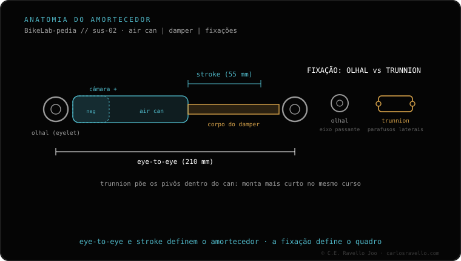

O serviço do air can é o equivalente, no amortecedor traseiro, ao serviço das pernas do garfo (a RockShox marca ~50 h). Retira-se a lata de ar (air can), substituem-se os retentores e os anéis o-ring e coloca-se lubrificante novo. Devolve o toque suave do amortecedor e previne o desgaste das buchas. Veja de quanto em quanto tempo é cada serviço; e se o amortecedor perde ar, isso aponta para outra coisa.
É a manutenção frequente do amortecedor: o irmão traseiro do serviço das pernas. Barato comparado a deixar que ele coma as buchas.

O air can guarda a câmara de ar e o lubrificante que mantém o amortecedor suave. Com as horas, esse lubrificante suja e seca, e os retentores e anéis o-ring perdem a vedação. O resultado é um amortecedor que fica seco e áspero e começa a desgastar as buchas por atrito.
Por isso é um serviço frequente e de custo relativamente baixo: fazê-lo a tempo mantém o toque suave e evita que o desgaste chegue a peças mais caras do amortecedor.
Diga o modelo do seu amortecedor e as horas que rodou e dizemos se é o momento. Fale com a gente no WhatsApp
O serviço frequente do amortecedor traseiro, equivalente ao das pernas do garfo: retira-se a lata de ar, trocam-se retentores e anéis o-ring e coloca-se lubrificante novo.
O lubrificante seca e os retentores se desgastam; sem serviço, o amortecedor come as buchas.
A RockShox marca ~50 h; adiante em poeira ou lama.
© 2026 BikeLab Studio. Conteúdo sob CC BY 4.0: você pode copiar, traduzir e publicar, inclusive com fins comerciais. A citação é obrigatória. Sem atribuição, a licença é revogada automaticamente (CC BY 4.0, §6.a) e o uso passa a ser violação de direitos autorais: solicitamos a retirada do conteúdo e sua desindexação. · Design e propriedade: Carlos Ravello Joo